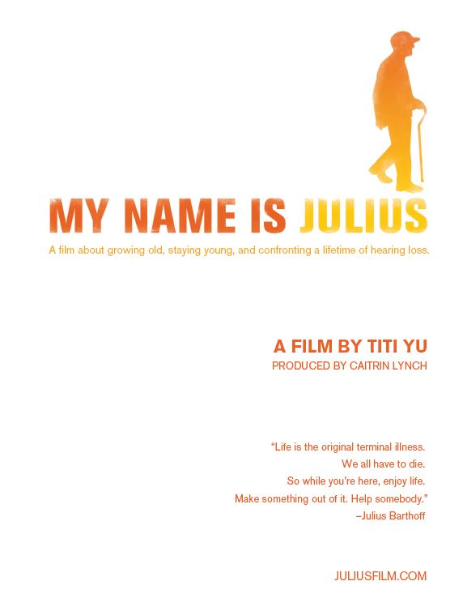

My Name is Julius
Directed by Titi YuProduced by Caitrin Lynch
 "Life is the original terminal illness. We all have to die. So while you're here, enjoy life. Make something out of it. Help somebody." – Julius Barthoff
This short documentary focuses on the final year in the life of Julius Barthoff, a remarkable man who lived 100 years without ever slowing down. Julius had a profound hearing loss, the result of contracting diphtheria as an infant.
Through Julius's life experiences, the film tells a story about deafness, disability, and aging in the United States.
The film shows Julius at 99 and 100 years old, a lively, vibrant, and warm man deeply engaged with the world around him. We see that Julius's outlook on life, his forms of social engagement, and his everyday activities are deeply affected by his hearing disability.
A widower, Julius lives alone in a one-bedroom apartment in a senior citizen building, as independent and curious about the world as ever. He spends his day distributing the newspapers that are delivered to his building, communicating with friends from all over the world via email, and doing what he can to improve the lives of his fellow senior citizens.
NTSC format, 17 minutes. In English with English subtitles.